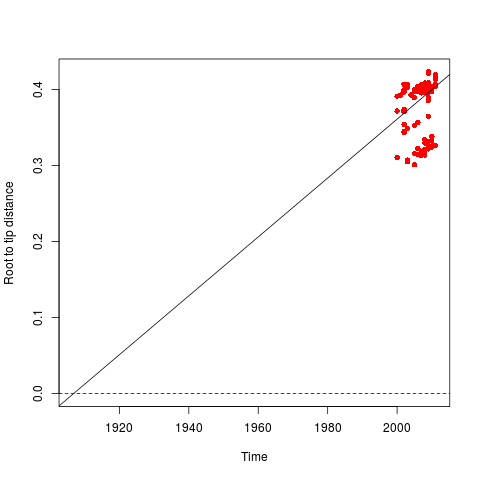
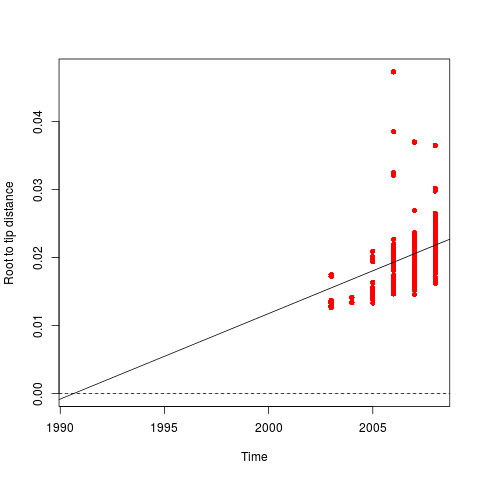
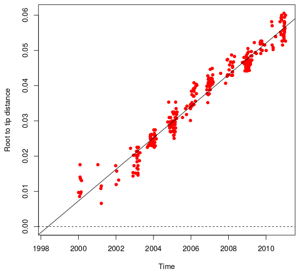
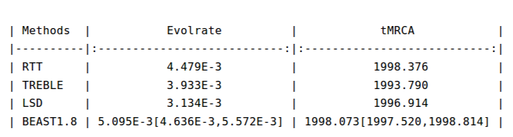
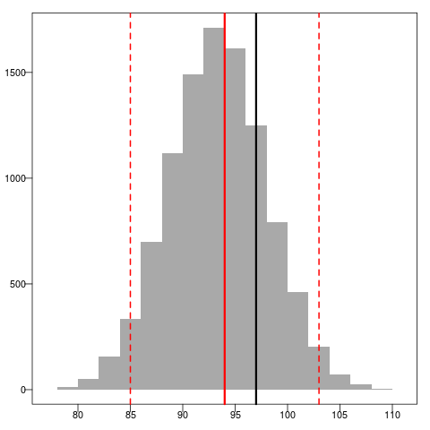

Phylodynamics pipeline for pathogen sequence data
Mukarram Hossain
Department of Veterinary Medicine
University of Cambridge
Phylodynamics
"Viral phylodynamics is defined as the study of how epidemiological, immunological, and evolutionary processes act and potentially interact to shape viral phylogenies."
Phylodynamic analysis
- Serially sampled virus sequences and phylogenies reveal phylodynamic properties
- Frequently use sophisticated software packages:
- BEAST
- MrBayes
- BEAST is cited ~7300 times
People use BEAST/MrBayes as a black box
Phylodynamic analysis - issues
Datasets with heterogeneity

Heterogeneity in phylogeny

Resource requirements


Incorrect model selection
- Poor model fit in phylodynamic studies may lead to incorrect estimation
Prior analysis is recommended before running BEAST
BEAST
- Rely on Markov Chain Monte Carlo (MCMC) to obtain posterior estimates
- MCMC is slow to reach stationary distribution for large datasets
- BEAST is an ideal tool for confirmatory analysis
- Not ideal for:
- model comparison
- hypothesis testing using goodness of fit
Phylodynamic pipeline
Phylopipe
- For high throughput analysis of heterochronous pathogen sequence data
- Can be used for three purposes:
- quality control step
- exploratory tool to obtain rough estimates
- to use these estimates as initial conditions in BEAST
PhyloPipe - Tools
The following tools are included in the pipeline:
PhyloPipe - workflow

Case studies
Dengue virus type 1 (Vietnam)

H3N2 influenza (HA) - Europe


Europe - rates and tMRCA

Europe - molecular clock

Europe - demographic model

Europe - skyride

Europe - asymmetry analysis

Europe - asymmetry analysis

Distribution of number of cherries

Disribution of Sackin's index
Europe - initial conditions

PhyloPipe - summary
- Quick and approximate phylodynamic estimation
- Compatible (??) estimation of parameters
- Ease of use
Future works
- Include more analysis tools
- Set up web service with analysis summary
- Develop open platform distributed application
Acknowledgements
- Simon Frost
- Bethany Dearlove
- Fei Xiang